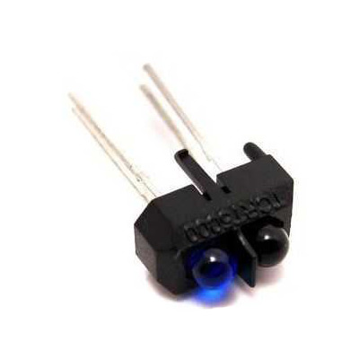

TCRT5000 Infrared Reflective Sensor Module
The TCRT5000 Infrared Reflective Sensor Module is a highly versatile and reliable component designed for a wide array of optical sensing applications. Built around the industry-standard TCRT5000 infrared emitter and phototransistor pair, this module is an absolute must-have for electronics enthusiasts, engineering students, and hobbyists across Bangladesh. The sensor operates by emitting a focused beam of infrared light from its LED. When an object is placed in front of the sensor, the infrared light bounces off the object's surface and reflects back into the built-in phototransistor. This simple yet highly effective mechanism allows the sensor to detect the presence of objects, measure distances over short ranges, and differentiate between light and dark surfaces with remarkable precision.
One of the most common and popular uses for the TCRT5000 module is in the construction of line-following robots. In such applications, the sensor is typically positioned facing downwards towards the floor. Because dark surfaces (like a black line) absorb infrared light while light surfaces (like a white floor) reflect it, the sensor can easily distinguish between the two. The onboard comparator circuit, usually built around the LM393 IC, processes the analog signal from the phototransistor and provides a clean, easily readable digital output (HIGH or LOW). This makes it incredibly straightforward to interface with microcontrollers such as the Arduino Uno, ESP32, Raspberry Pi, or any other digital logic system without needing complex analog-to-digital conversion.
In addition to its digital output, many TCRT5000 modules also feature an analog output pin. This analog pin provides a continuous voltage reading that varies depending on the intensity of the reflected infrared light. This feature is particularly useful for applications requiring more nuanced distance measurements or variable threshold detection. The module also comes equipped with a built-in potentiometer, allowing users to manually adjust the detection sensitivity to suit different lighting conditions and object reflectivities. This adaptability makes the TCRT5000 an excellent choice for a variety of projects, from simple obstacle avoidance systems in small autonomous vehicles to sophisticated edge detection and rotary encoder applications.
When shopping for electronic components in Bangladesh, reliability and performance are key. Our TCRT5000 modules are rigorously tested to ensure consistent performance out of the box. Whether you are building your very first robot, designing an automated sorting system for an industrial prototype, or creating interactive installations, the TCRT5000 provides the dependable optical sensing capabilities you need to succeed. Its compact size, low power consumption, and dual output options make it one of the most practical and frequently utilized sensors in the maker community.
Key Features:
- Dual output modes: Digital (DO) and Analog (AO)
- Onboard LM393 comparator chip for clean digital signals
- Adjustable sensitivity via built-in potentiometer
- Ideal for line-following and obstacle avoidance
- Easy integration with 3.3V and 5V microcontrollers
Specifications:
- Sensor Model: TCRT5000 Infrared Emitter and Phototransistor Pair
- Operating Voltage: 3.3V to 5V DC (Highly compatible with most microcontrollers)
- Operating Current: Approximately 15mA during continuous active operation
- Detection Range: 1mm to 25mm (Optimal performance typically around 10mm)
- Output Format: Dual output featuring both Digital (0 or 1) and Analog (variable voltage)
- Comparator Chip: LM393 voltage comparator for stable digital signal generation
- Sensitivity Adjustment: Onboard variable resistor (potentiometer) for precise tuning
- Indicator LEDs: Power LED and Digital Output status LED for easy troubleshooting
- Mounting Hole: Pre-drilled 3mm mounting hole for secure physical installation
- Dimensions: 32mm x 14mm (Compact footprint suitable for tight enclosures)
Applications:
- Line Following Robots: The primary application, distinguishing between black tracks and white backgrounds for autonomous navigation.
- Obstacle Avoidance: Detecting the presence of nearby objects to prevent collisions in small-scale robotic vehicles.
- Edge Detection: Preventing robots from falling off tables or stairs by sensing the sudden absence of a reflective surface.
- Rotary Encoders: Counting wheel rotations or motor RPM by detecting alternating black and white stripes on a rotating disk.
- Optical Switches and Limit Switches: Acting as a non-contact trigger for moving mechanical parts in 3D printers and CNC machines.
- Paper Detection in Printers: Identifying whether paper is present in the feed tray of a printer or photocopier.
- Automated Sorting Systems: Detecting items on a conveyor belt for industrial automation and counting applications.
- Interactive Art and Displays: Triggering light or sound effects when a user's hand approaches the sensor.
Frequently Asked Questions (FAQ):
A: The module typically has four pins: VCC, GND, DO (Digital Out), and AO (Analog Out). Connect VCC to 5V, GND to GND, and DO to any digital input pin on the Arduino. If you need the analog reading, connect AO to an analog input pin (like A0).
A: This usually means the sensitivity needs adjustment. Use a small screwdriver to turn the onboard potentiometer until the digital output LED toggles correctly when an object is placed in front of the sensor.
A: Yes, strong ambient light, especially direct sunlight which contains a lot of infrared radiation, can interfere with the sensor's readings. It is recommended to use the sensor in controlled lighting environments or shield it from direct sunlight.
A: The TCRT5000 is designed for short-range detection. Its reliable maximum range is typically around 25mm (1 inch). For distances beyond this, an ultrasonic sensor or a long-range IR sensor like the Sharp GP2Y0A21YK0F is recommended.
A: Detecting transparent objects can be very challenging because infrared light tends to pass through them rather than reflecting back. The sensor may occasionally detect them if there are reflections off the edges or surface imperfections, but it is not reliable for this purpose.